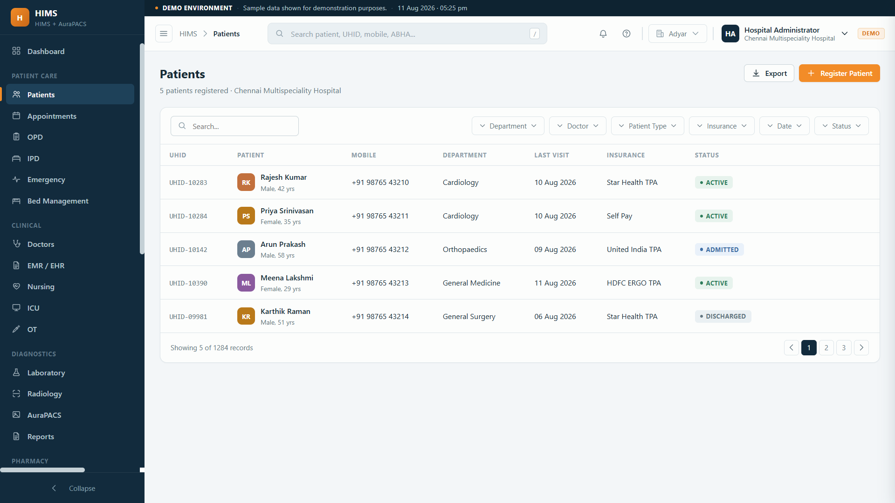

Demographics, full visit history, EMR, prescriptions, lab and imaging on a single record, with a patient app and ABHA linking. Any doctor sees the whole story, not just today's visit.

When records live per visit or per department, a returning patient is a blank slate. Doctors miss prior diagnoses, repeat tests, and cannot see the trend that tells the real story.
Each visit disconnected from the last.
Investigations redone because priors are missing.
Allergies and history not in front of the doctor.
Unique patient ID.
OP, IP, every time.
EMR, orders, notes.
Lab and imaging attach.
Patient app, ABHA.
A patient timeline across visits and departments.
One record across departments.
History for every follow-up.
Full context before consult.
Reports on the patient file.
Shared, current record.
Their records in an app.
Our imaging module has a live demo, and images attach to the patient record.
Elevate Aura builds patient-facing and field apps, so a proper patient app is familiar ground.
Founder-led delivery, so you talk to the builder.
One record per patient that holds demographics, every visit, EMR notes, prescriptions, lab results and imaging, so any doctor sees the full picture instead of a single visit.
Yes. The EMR captures history, diagnoses, orders and notes, linked to the same patient across OP, IP and departments.
Yes. Patients can view their reports, prescriptions and appointments in an app, and receive updates on WhatsApp.
Yes. The platform is built to support ABHA linking and ABDM-aligned digital health records.
Access is role-based, so only authorised staff see a patient's record, with an audit trail. It is part of the full hospital system.
Tell us how you keep patient records today. We will unify them into one file, with a patient app and ABHA, across every visit.
Unified record · Patient app · ABHA ready